2022 Higher Human Biology - Paper 2 marking instructions
Source: Scottish Qualifications Authority (SQA) / Qualifications Scotland. This is a StemInteract HTML companion, not an official HTML edition. Extracted text is supplied alongside unaltered page images; use the images or original PDF for table layout, diagrams and symbols.
Jump to a question
PDF page 1
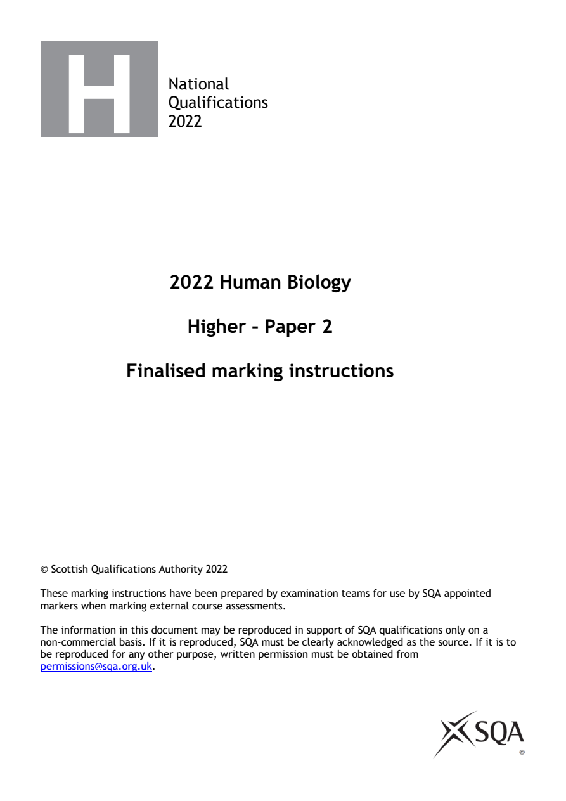
Selectable page text
National
Qualifications
2022
2022 Human Biology
Higher – Paper 2
Finalised marking instructions
© Scottish Qualifications Authority 2022
These marking instructions have been prepared by examination teams for use by SQA appointed
markers when marking external course assessments.
The information in this document may be reproduced in support of SQA qualifications only on a
non-commercial basis. If it is reproduced, SQA must be clearly acknowledged as the source. If it is to
be reproduced for any other purpose, written permission must be obtained from
permissions@sqa.org.uk.PDF page 2
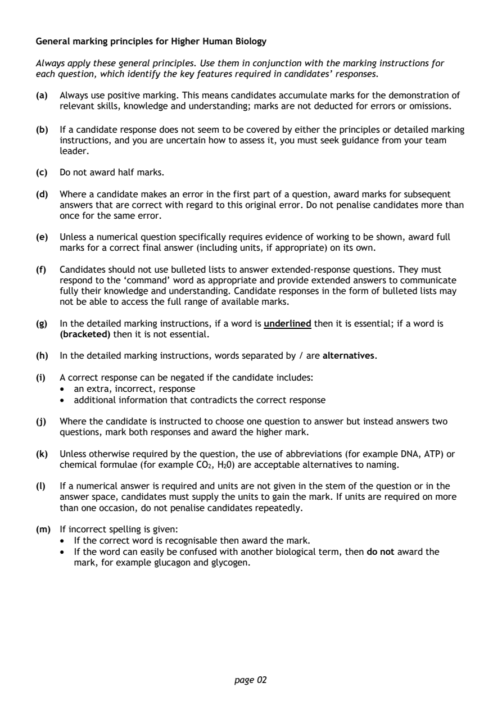
Selectable page text
General marking principles for Higher Human Biology
Always apply these general principles. Use them in conjunction with the marking instructions for
each question, which identify the key features required in candidates’ responses.
(a) Always use positive marking. This means candidates accumulate marks for the demonstration of
relevant skills, knowledge and understanding; marks are not deducted for errors or omissions.
(b) If a candidate response does not seem to be covered by either the principles or detailed marking
instructions, and you are uncertain how to assess it, you must seek guidance from your team
leader.
(c) Do not award half marks.
(d) Where a candidate makes an error in the first part of a question, award marks for subsequent
answers that are correct with regard to this original error. Do not penalise candidates more than
once for the same error.
(e) Unless a numerical question specifically requires evidence of working to be shown, award full
marks for a correct final answer (including units, if appropriate) on its own.
(f) Candidates should not use bulleted lists to answer extended-response questions. They must
respond to the ‘command’ word as appropriate and provide extended answers to communicate
fully their knowledge and understanding. Candidate responses in the form of bulleted lists may
not be able to access the full range of available marks.
(g) In the detailed marking instructions, if a word is underlined then it is essential; if a word is
(bracketed) then it is not essential.
(h) In the detailed marking instructions, words separated by / are alternatives.
(i) A correct response can be negated if the candidate includes:
• an extra, incorrect, response
• additional information that contradicts the correct response
(j) Where the candidate is instructed to choose one question to answer but instead answers two
questions, mark both responses and award the higher mark.
(k) Unless otherwise required by the question, the use of abbreviations (for example DNA, ATP) or
chemical formulae (for example CO , H 0) are acceptable alternatives to naming.
2 2
(l) If a numerical answer is required and units are not given in the stem of the question or in the
answer space, candidates must supply the units to gain the mark. If units are required on more
than one occasion, do not penalise candidates repeatedly.
(m) If incorrect spelling is given:
• If the correct word is recognisable then award the mark.
• If the word can easily be confused with another biological term, then do not award the
mark, for example glucagon and glycogen.
page 02PDF page 3
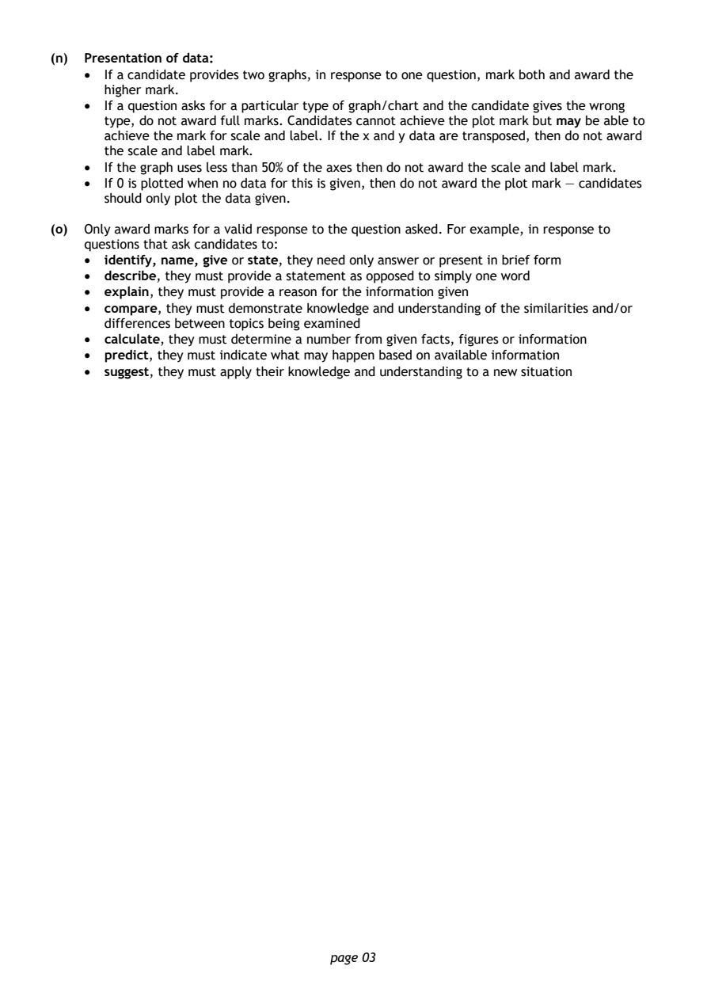
Selectable page text
(n) Presentation of data:
• If a candidate provides two graphs, in response to one question, mark both and award the
higher mark.
• If a question asks for a particular type of graph/chart and the candidate gives the wrong
type, do not award full marks. Candidates cannot achieve the plot mark but may be able to
achieve the mark for scale and label. If the x and y data are transposed, then do not award
the scale and label mark.
• If the graph uses less than 50% of the axes then do not award the scale and label mark.
• If 0 is plotted when no data for this is given, then do not award the plot mark — candidates
should only plot the data given.
(o) Only award marks for a valid response to the question asked. For example, in response to
questions that ask candidates to:
• identify, name, give or state, they need only answer or present in brief form
• describe, they must provide a statement as opposed to simply one word
• explain, they must provide a reason for the information given
• compare, they must demonstrate knowledge and understanding of the similarities and/or
differences between topics being examined
• calculate, they must determine a number from given facts, figures or information
• predict, they must indicate what may happen based on available information
• suggest, they must apply their knowledge and understanding to a new situation
page 03PDF page 4
Question 1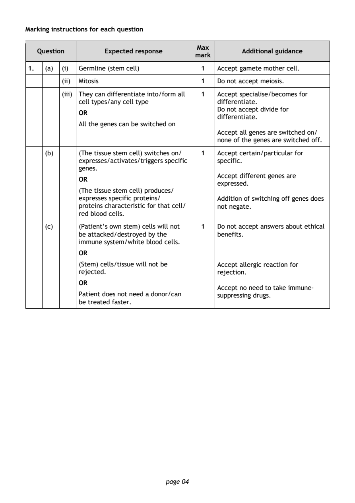
Selectable page text
Marking instructions for each question
Max
Question Expected response Additional guidance
mark
1. (a) (i) Germline (stem cell) 1 Accept gamete mother cell.
(ii) Mitosis 1 Do not accept meiosis.
(iii) They can differentiate into/form all 1 Accept specialise/becomes for
cell types/any cell type differentiate.
Do not accept divide for
OR
differentiate.
All the genes can be switched on
Accept all genes are switched on/
none of the genes are switched off.
(b) (The tissue stem cell) switches on/ 1 Accept certain/particular for
expresses/activates/triggers specific specific.
genes.
Accept different genes are
OR
expressed.
(The tissue stem cell) produces/
expresses specific proteins/ Addition of switching off genes does
proteins characteristic for that cell/ not negate.
red blood cells.
(c) (Patient’s own stem) cells will not 1 Do not accept answers about ethical
be attacked/destroyed by the benefits.
immune system/white blood cells.
OR
(Stem) cells/tissue will not be Accept allergic reaction for
rejected. rejection.
OR
Accept no need to take immune-
Patient does not need a donor/can suppressing drugs.
be treated faster.
page 04PDF page 5
Question 2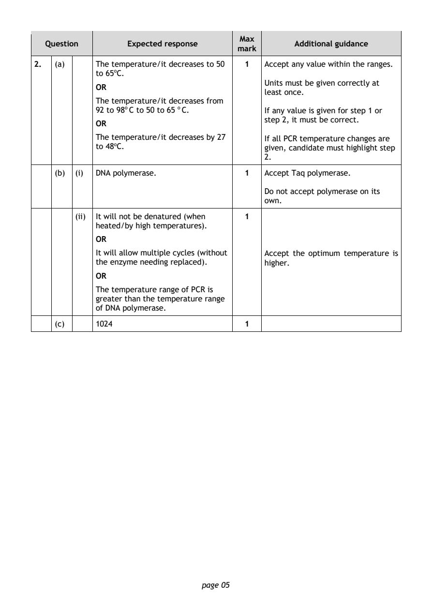
Selectable page text
Max
Question Expected response Additional guidance
mark
2. (a) The temperature/it decreases to 50 1 Accept any value within the ranges.
to 65oC.
Units must be given correctly at
OR
least once.
The temperature/it decreases from
92 to 98o C to 50 to 65 o C. If any value is given for step 1 or
step 2, it must be correct.
OR
The temperature/it decreases by 27 If all PCR temperature changes are
to 48oC. given, candidate must highlight step
2.
(b) (i) DNA polymerase. 1 Accept Taq polymerase.
Do not accept polymerase on its
own.
(ii) It will not be denatured (when 1
heated/by high temperatures).
OR
It will allow multiple cycles (without Accept the optimum temperature is
the enzyme needing replaced). higher.
OR
The temperature range of PCR is
greater than the temperature range
of DNA polymerase.
(c) 1024 1
page 05PDF page 6
Question 3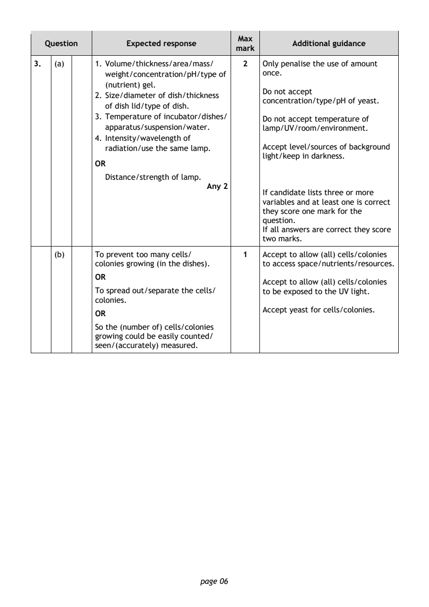
Selectable page text
Max
Question Expected response Additional guidance
mark
3. (a) 1. Volume/thickness/area/mass/ 2 Only penalise the use of amount
weight/concentration/pH/type of once.
(nutrient) gel.
Do not accept
2. Size/diameter of dish/thickness
concentration/type/pH of yeast.
of dish lid/type of dish.
3. Temperature of incubator/dishes/
Do not accept temperature of
apparatus/suspension/water. lamp/UV/room/environment.
4. Intensity/wavelength of
radiation/use the same lamp. Accept level/sources of background
light/keep in darkness.
OR
Distance/strength of lamp.
Any 2
If candidate lists three or more
variables and at least one is correct
they score one mark for the
question.
If all answers are correct they score
two marks.
(b) To prevent too many cells/ 1 Accept to allow (all) cells/colonies
colonies growing (in the dishes). to access space/nutrients/resources.
OR
Accept to allow (all) cells/colonies
To spread out/separate the cells/ to be exposed to the UV light.
colonies.
Accept yeast for cells/colonies.
OR
So the (number of) cells/colonies
growing could be easily counted/
seen/(accurately) measured.
page 06PDF page 7
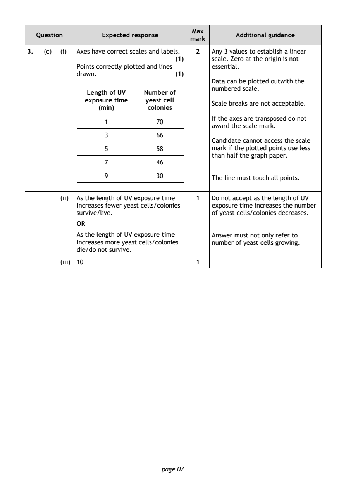
Selectable page text
Max
Question Expected response Additional guidance
mark
3. (c) (i) Axes have correct scales and labels. 2 Any 3 values to establish a linear
(1) scale. Zero at the origin is not
Points correctly plotted and lines essential.
drawn. (1)
Data can be plotted outwith the
numbered scale.
Length of UV Number of
exposure time yeast cell
Scale breaks are not acceptable.
(min) colonies
If the axes are transposed do not
1 70
award the scale mark.
3 66
Candidate cannot access the scale
5 58 mark if the plotted points use less
than half the graph paper.
7 46
9 30
The line must touch all points.
(ii) As the length of UV exposure time 1 Do not accept as the length of UV
increases fewer yeast cells/colonies exposure time increases the number
survive/live. of yeast cells/colonies decreases.
OR
As the length of UV exposure time Answer must not only refer to
increases more yeast cells/colonies number of yeast cells growing.
die/do not survive.
(iii) 10 1
page 07PDF page 8
Question 4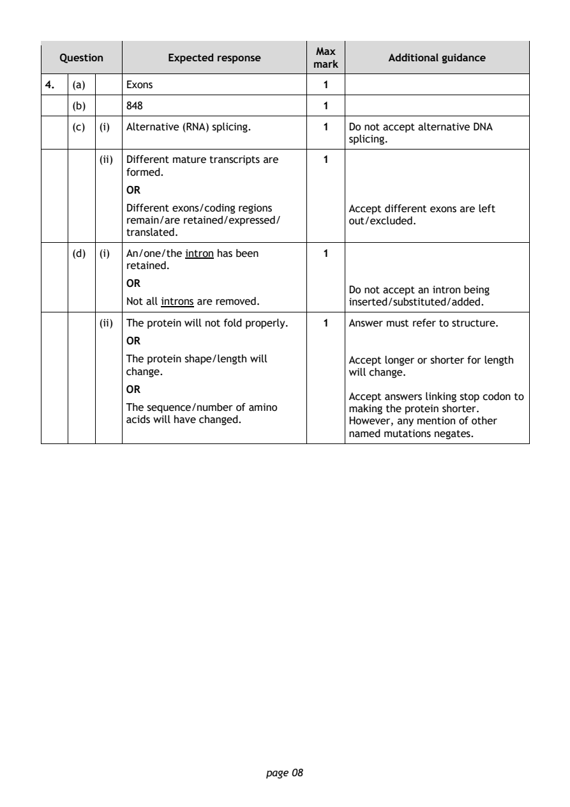
Selectable page text
Max
Question Expected response Additional guidance
mark
4. (a) Exons 1
(b) 848 1
(c) (i) Alternative (RNA) splicing. 1 Do not accept alternative DNA
splicing.
(ii) Different mature transcripts are 1
formed.
OR
Different exons/coding regions Accept different exons are left
remain/are retained/expressed/ out/excluded.
translated.
(d) (i) An/one/the intron has been 1
retained.
OR
Do not accept an intron being
Not all introns are removed. inserted/substituted/added.
(ii) The protein will not fold properly. 1 Answer must refer to structure.
OR
The protein shape/length will Accept longer or shorter for length
change. will change.
OR
Accept answers linking stop codon to
The sequence/number of amino making the protein shorter.
acids will have changed. However, any mention of other
named mutations negates.
page 08PDF page 9
Question 5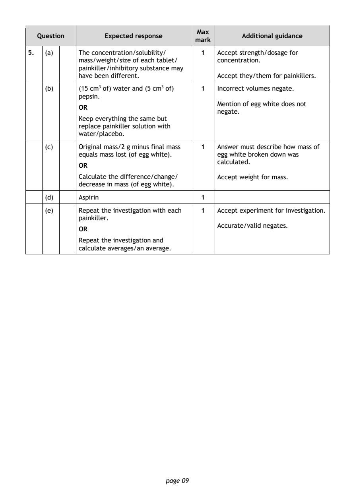
Selectable page text
Max
Question Expected response Additional guidance
mark
5. (a) The concentration/solubility/ 1 Accept strength/dosage for
mass/weight/size of each tablet/ concentration.
painkiller/inhibitory substance may
have been different. Accept they/them for painkillers.
(b) (15 cm3 of) water and (5 cm3 of) 1 Incorrect volumes negate.
pepsin.
Mention of egg white does not
OR
negate.
Keep everything the same but
replace painkiller solution with
water/placebo.
(c) Original mass/2 g minus final mass 1 Answer must describe how mass of
equals mass lost (of egg white). egg white broken down was
calculated.
OR
Calculate the difference/change/ Accept weight for mass.
decrease in mass (of egg white).
(d) Aspirin 1
(e) Repeat the investigation with each 1 Accept experiment for investigation.
painkiller.
Accurate/valid negates.
OR
Repeat the investigation and
calculate averages/an average.
page 09PDF page 10
Question 6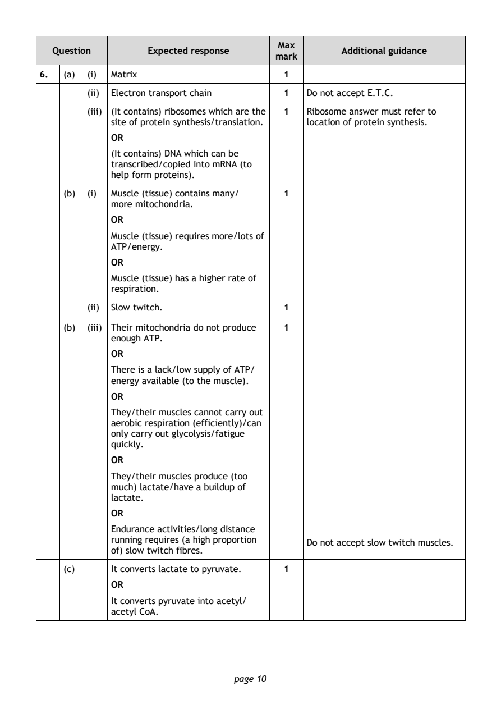
Selectable page text
Max
Question Expected response Additional guidance
mark
6. (a) (i) Matrix 1
(ii) Electron transport chain 1 Do not accept E.T.C.
(iii) (It contains) ribosomes which are the 1 Ribosome answer must refer to
site of protein synthesis/translation. location of protein synthesis.
OR
(It contains) DNA which can be
transcribed/copied into mRNA (to
help form proteins).
(b) (i) Muscle (tissue) contains many/ 1
more mitochondria.
OR
Muscle (tissue) requires more/lots of
ATP/energy.
OR
Muscle (tissue) has a higher rate of
respiration.
(ii) Slow twitch. 1
(b) (iii) Their mitochondria do not produce 1
enough ATP.
OR
There is a lack/low supply of ATP/
energy available (to the muscle).
OR
They/their muscles cannot carry out
aerobic respiration (efficiently)/can
only carry out glycolysis/fatigue
quickly.
OR
They/their muscles produce (too
much) lactate/have a buildup of
lactate.
OR
Endurance activities/long distance
running requires (a high proportion
Do not accept slow twitch muscles.
of) slow twitch fibres.
(c) It converts lactate to pyruvate. 1
OR
It converts pyruvate into acetyl/
acetyl CoA.
page 10PDF page 11
Question 7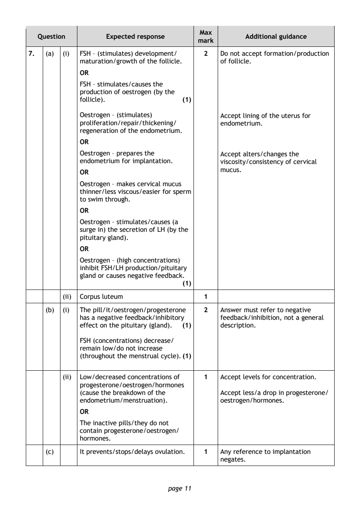
Selectable page text
Max
Question Expected response Additional guidance
mark
7. (a) (i) FSH – (stimulates) development/ 2 Do not accept formation/production
maturation/growth of the follicle. of follicle.
OR
FSH – stimulates/causes the
production of oestrogen (by the
follicle). (1)
Oestrogen – (stimulates) Accept lining of the uterus for
proliferation/repair/thickening/ endometrium.
regeneration of the endometrium.
OR
Oestrogen – prepares the Accept alters/changes the
endometrium for implantation. viscosity/consistency of cervical
mucus.
OR
Oestrogen – makes cervical mucus
thinner/less viscous/easier for sperm
to swim through.
OR
Oestrogen – stimulates/causes (a
surge in) the secretion of LH (by the
pituitary gland).
OR
Oestrogen – (high concentrations)
inhibit FSH/LH production/pituitary
gland or causes negative feedback.
(1)
(ii) Corpus luteum 1
(b) (i) The pill/it/oestrogen/progesterone 2 Answer must refer to negative
has a negative feedback/inhibitory feedback/inhibition, not a general
effect on the pituitary (gland). (1) description.
FSH (concentrations) decrease/
remain low/do not increase
(throughout the menstrual cycle). (1)
(ii) Low/decreased concentrations of 1 Accept levels for concentration.
progesterone/oestrogen/hormones
(cause the breakdown of the Accept less/a drop in progesterone/
endometrium/menstruation). oestrogen/hormones.
OR
The inactive pills/they do not
contain progesterone/oestrogen/
hormones.
(c) It prevents/stops/delays ovulation. 1 Any reference to implantation
negates.
page 11PDF page 12
Question 8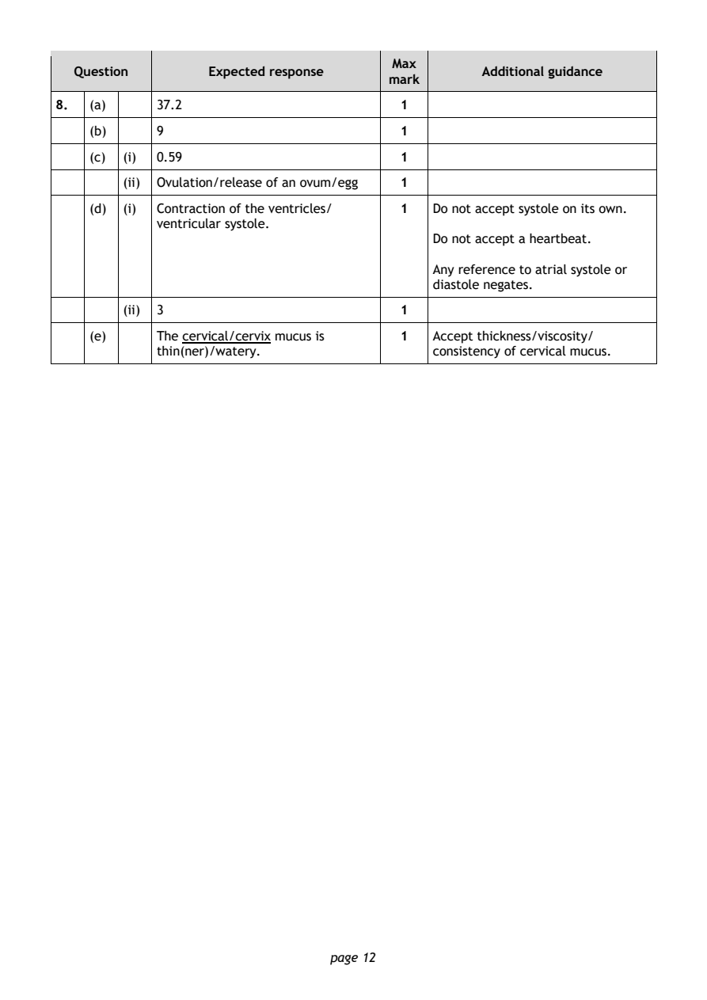
Selectable page text
Max
Question Expected response Additional guidance
mark
8. (a) 37.2 1
(b) 9 1
(c) (i) 0.59 1
(ii) Ovulation/release of an ovum/egg 1
(d) (i) Contraction of the ventricles/ 1 Do not accept systole on its own.
ventricular systole.
Do not accept a heartbeat.
Any reference to atrial systole or
diastole negates.
(ii) 3 1
(e) The cervical/cervix mucus is 1 Accept thickness/viscosity/
thin(ner)/watery. consistency of cervical mucus.
page 12PDF page 13
Question 9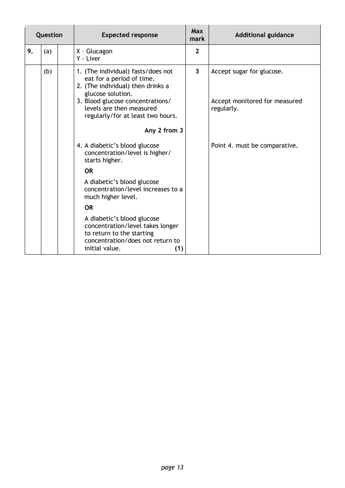
Selectable page text
Max
Question Expected response Additional guidance
mark
9. (a) X – Glucagon 2
Y - Liver
(b) 1. (The individual) fasts/does not 3 Accept sugar for glucose.
eat for a period of time.
2. (The individual) then drinks a
glucose solution.
3. Blood glucose concentrations/ Accept monitored for measured
levels are then measured regularly.
regularly/for at least two hours.
Any 2 from 3
4. A diabetic’s blood glucose Point 4. must be comparative.
concentration/level is higher/
starts higher.
OR
A diabetic’s blood glucose
concentration/level increases to a
much higher level.
OR
A diabetic’s blood glucose
concentration/level takes longer
to return to the starting
concentration/does not return to
initial value. (1)
page 13PDF page 14
Question 10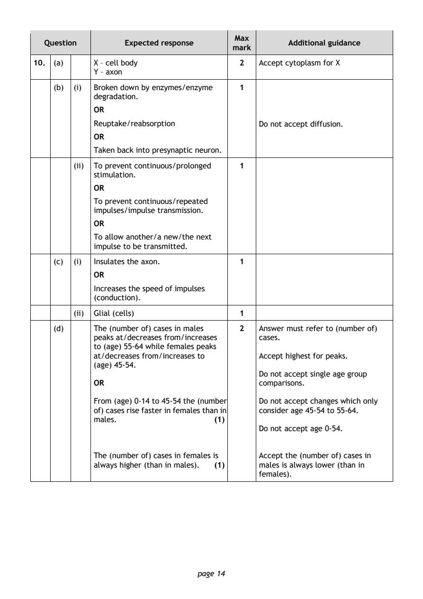
Selectable page text
Max
Question Expected response Additional guidance
mark
10. (a) X – cell body 2 Accept cytoplasm for X
Y – axon
(b) (i) Broken down by enzymes/enzyme 1
degradation.
OR
Reuptake/reabsorption Do not accept diffusion.
OR
Taken back into presynaptic neuron.
(ii) To prevent continuous/prolonged 1
stimulation.
OR
To prevent continuous/repeated
impulses/impulse transmission.
OR
To allow another/a new/the next
impulse to be transmitted.
(c) (i) Insulates the axon. 1
OR
Increases the speed of impulses
(conduction).
(ii) Glial (cells) 1
(d) The (number of) cases in males 2 Answer must refer to (number of)
peaks at/decreases from/increases cases.
to (age) 55-64 while females peaks
at/decreases from/increases to Accept highest for peaks.
(age) 45-54.
Do not accept single age group
OR comparisons.
From (age) 0-14 to 45-54 the (number Do not accept changes which only
of) cases rise faster in females than in consider age 45-54 to 55-64.
males. (1)
Do not accept age 0-54.
The (number of) cases in females is Accept the (number of) cases in
always higher (than in males). (1) males is always lower (than in
females).
page 14PDF page 15
Question 11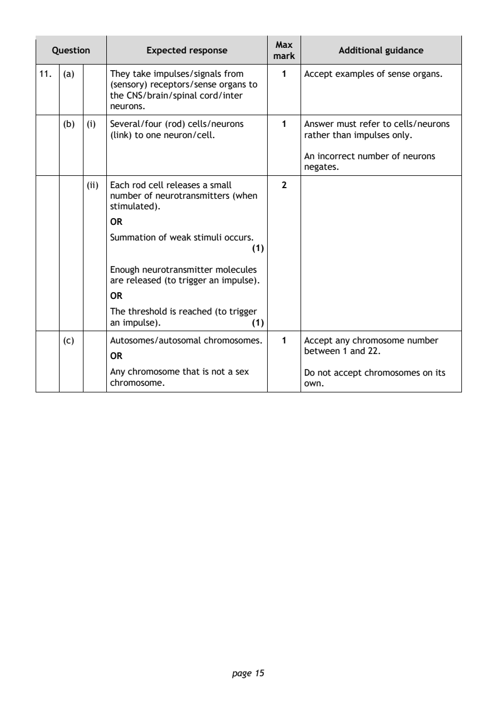
Selectable page text
Max
Question Expected response Additional guidance
mark
11. (a) They take impulses/signals from 1 Accept examples of sense organs.
(sensory) receptors/sense organs to
the CNS/brain/spinal cord/inter
neurons.
(b) (i) Several/four (rod) cells/neurons 1 Answer must refer to cells/neurons
(link) to one neuron/cell. rather than impulses only.
An incorrect number of neurons
negates.
(ii) Each rod cell releases a small 2
number of neurotransmitters (when
stimulated).
OR
Summation of weak stimuli occurs.
(1)
Enough neurotransmitter molecules
are released (to trigger an impulse).
OR
The threshold is reached (to trigger
an impulse). (1)
(c) Autosomes/autosomal chromosomes. 1 Accept any chromosome number
between 1 and 22.
OR
Any chromosome that is not a sex Do not accept chromosomes on its
chromosome. own.
page 15PDF page 16
Question 12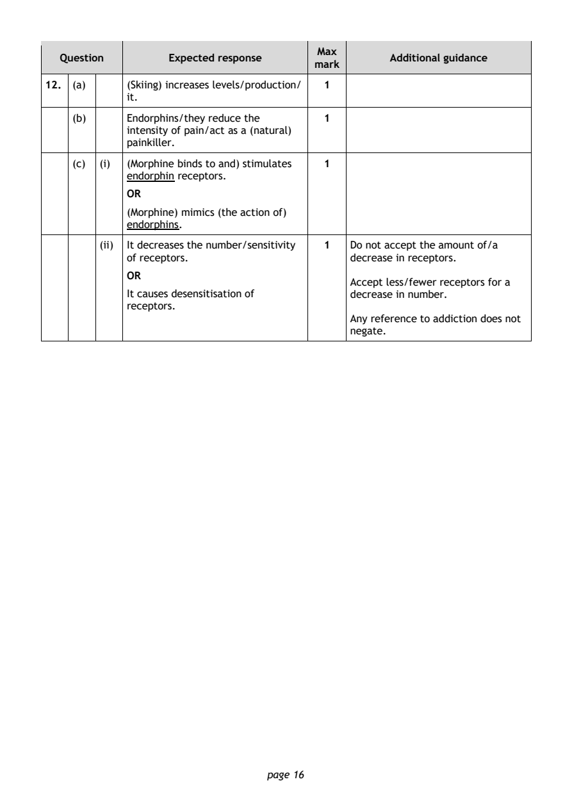
Selectable page text
Max
Question Expected response Additional guidance
mark
12. (a) (Skiing) increases levels/production/ 1
it.
(b) Endorphins/they reduce the 1
intensity of pain/act as a (natural)
painkiller.
(c) (i) (Morphine binds to and) stimulates 1
endorphin receptors.
OR
(Morphine) mimics (the action of)
endorphins.
(ii) It decreases the number/sensitivity 1 Do not accept the amount of/a
of receptors. decrease in receptors.
OR
Accept less/fewer receptors for a
It causes desensitisation of decrease in number.
receptors.
Any reference to addiction does not
negate.
page 16PDF page 17
Question 13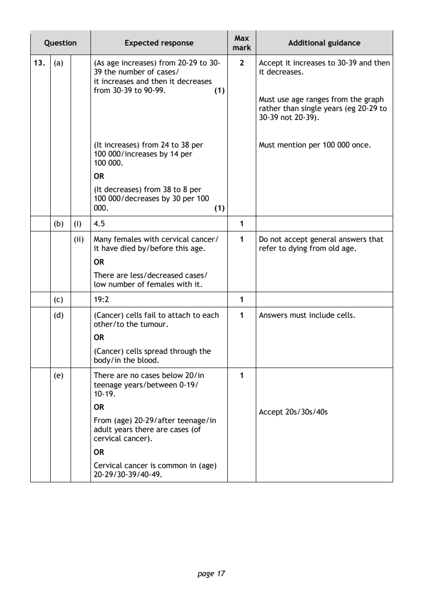
Selectable page text
Max
Question Expected response Additional guidance
mark
13. (a) (As age increases) from 20-29 to 30- 2 Accept it increases to 30-39 and then
39 the number of cases/ it decreases.
it increases and then it decreases
from 30-39 to 90-99. (1)
Must use age ranges from the graph
rather than single years (eg 20-29 to
30-39 not 20-39).
(It increases) from 24 to 38 per Must mention per 100 000 once.
100 000/increases by 14 per
100 000.
OR
(It decreases) from 38 to 8 per
100 000/decreases by 30 per 100
000. (1)
(b) (i) 4.5 1
(ii) Many females with cervical cancer/ 1 Do not accept general answers that
it have died by/before this age. refer to dying from old age.
OR
There are less/decreased cases/
low number of females with it.
(c) 19:2 1
(d) (Cancer) cells fail to attach to each 1 Answers must include cells.
other/to the tumour.
OR
(Cancer) cells spread through the
body/in the blood.
(e) There are no cases below 20/in 1
teenage years/between 0-19/
10-19.
OR
Accept 20s/30s/40s
From (age) 20-29/after teenage/in
adult years there are cases (of
cervical cancer).
OR
Cervical cancer is common in (age)
20-29/30-39/40-49.
page 17PDF page 18
Question 14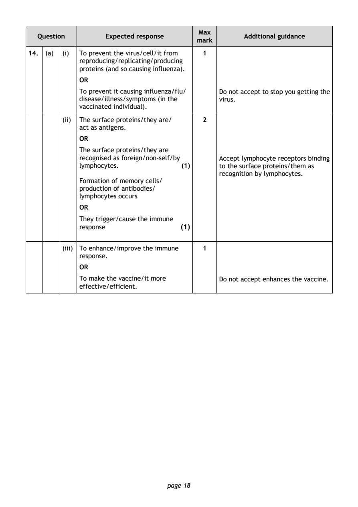
Selectable page text
Max
Question Expected response Additional guidance
mark
14. (a) (i) To prevent the virus/cell/it from 1
reproducing/replicating/producing
proteins (and so causing influenza).
OR
To prevent it causing influenza/flu/ Do not accept to stop you getting the
disease/illness/symptoms (in the virus.
vaccinated individual).
(ii) The surface proteins/they are/ 2
act as antigens.
OR
The surface proteins/they are
recognised as foreign/non-self/by Accept lymphocyte receptors binding
lymphocytes. (1) to the surface proteins/them as
recognition by lymphocytes.
Formation of memory cells/
production of antibodies/
lymphocytes occurs
OR
They trigger/cause the immune
response (1)
(iii) To enhance/improve the immune 1
response.
OR
To make the vaccine/it more Do not accept enhances the vaccine.
effective/efficient.
page 18PDF page 19
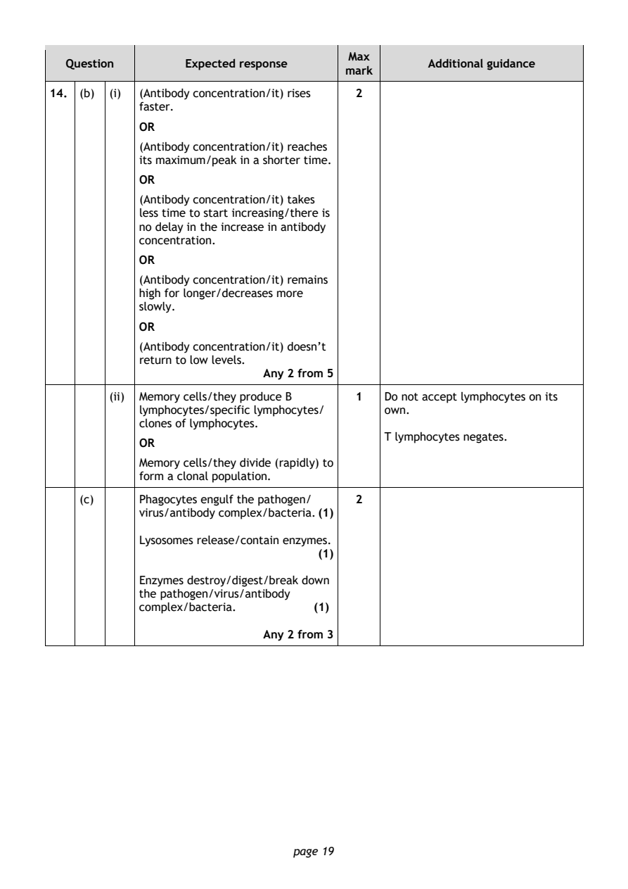
Selectable page text
Max
Question Expected response Additional guidance
mark
14. (b) (i) (Antibody concentration/it) rises 2
faster.
OR
(Antibody concentration/it) reaches
its maximum/peak in a shorter time.
OR
(Antibody concentration/it) takes
less time to start increasing/there is
no delay in the increase in antibody
concentration.
OR
(Antibody concentration/it) remains
high for longer/decreases more
slowly.
OR
(Antibody concentration/it) doesn’t
return to low levels.
Any 2 from 5
(ii) Memory cells/they produce B 1 Do not accept lymphocytes on its
lymphocytes/specific lymphocytes/ own.
clones of lymphocytes.
T lymphocytes negates.
OR
Memory cells/they divide (rapidly) to
form a clonal population.
(c) Phagocytes engulf the pathogen/ 2
virus/antibody complex/bacteria. (1)
Lysosomes release/contain enzymes.
(1)
Enzymes destroy/digest/break down
the pathogen/virus/antibody
complex/bacteria. (1)
Any 2 from 3
page 19PDF page 20
Question 15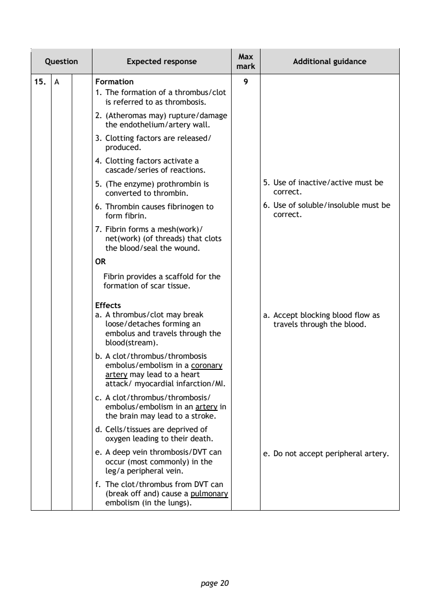
Selectable page text
Max
Question Expected response Additional guidance
mark
15. A Formation 9
1. The formation of a thrombus/clot
is referred to as thrombosis.
2. (Atheromas may) rupture/damage
the endothelium/artery wall.
3. Clotting factors are released/
produced.
4. Clotting factors activate a
cascade/series of reactions.
5. (The enzyme) prothrombin is 5. Use of inactive/active must be
converted to thrombin. correct.
6. Thrombin causes fibrinogen to 6. Use of soluble/insoluble must be
form fibrin. correct.
7. Fibrin forms a mesh(work)/
net(work) (of threads) that clots
the blood/seal the wound.
OR
Fibrin provides a scaffold for the
formation of scar tissue.
Effects
a. A thrombus/clot may break a. Accept blocking blood flow as
loose/detaches forming an travels through the blood.
embolus and travels through the
blood(stream).
b. A clot/thrombus/thrombosis
embolus/embolism in a coronary
artery may lead to a heart
attack/ myocardial infarction/MI.
c. A clot/thrombus/thrombosis/
embolus/embolism in an artery in
the brain may lead to a stroke.
d. Cells/tissues are deprived of
oxygen leading to their death.
e. A deep vein thrombosis/DVT can e. Do not accept peripheral artery.
occur (most commonly) in the
leg/a peripheral vein.
f. The clot/thrombus from DVT can
(break off and) cause a pulmonary
embolism (in the lungs).
page 20PDF page 21
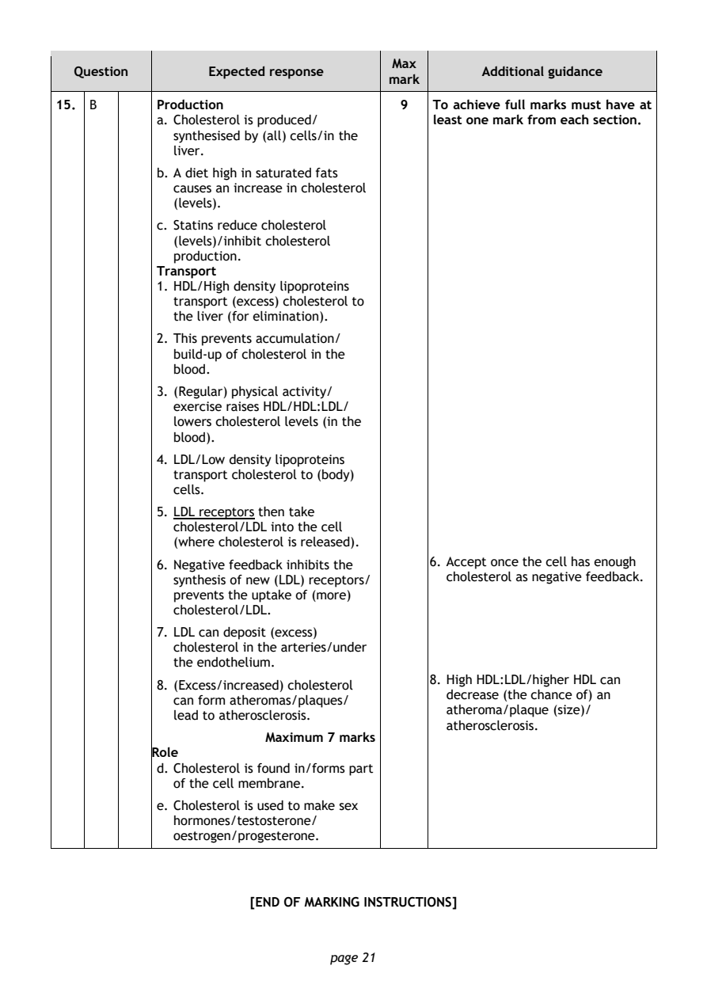
Selectable page text
Max
Question Expected response Additional guidance
mark
15. B Production 9 To achieve full marks must have at
a. Cholesterol is produced/ least one mark from each section.
synthesised by (all) cells/in the
liver.
b. A diet high in saturated fats
causes an increase in cholesterol
(levels).
c. Statins reduce cholesterol
(levels)/inhibit cholesterol
production.
Transport
1. HDL/High density lipoproteins
transport (excess) cholesterol to
the liver (for elimination).
2. This prevents accumulation/
build-up of cholesterol in the
blood.
3. (Regular) physical activity/
exercise raises HDL/HDL:LDL/
lowers cholesterol levels (in the
blood).
4. LDL/Low density lipoproteins
transport cholesterol to (body)
cells.
5. LDL receptors then take
cholesterol/LDL into the cell
(where cholesterol is released).
6. Negative feedback inhibits the 6. Accept once the cell has enough
synthesis of new (LDL) receptors/ cholesterol as negative feedback.
prevents the uptake of (more)
cholesterol/LDL.
7. LDL can deposit (excess)
cholesterol in the arteries/under
the endothelium.
8. High HDL:LDL/higher HDL can
8. (Excess/increased) cholesterol
decrease (the chance of) an
can form atheromas/plaques/
atheroma/plaque (size)/
lead to atherosclerosis.
atherosclerosis.
Maximum 7 marks
Role
d. Cholesterol is found in/forms part
of the cell membrane.
e. Cholesterol is used to make sex
hormones/testosterone/
oestrogen/progesterone.
[END OF MARKING INSTRUCTIONS]
page 21